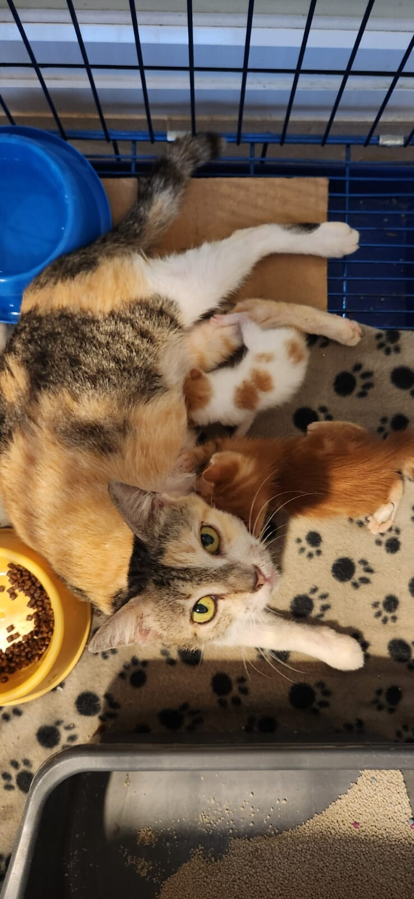
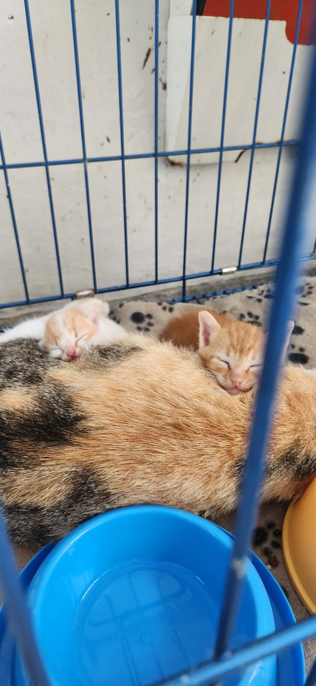
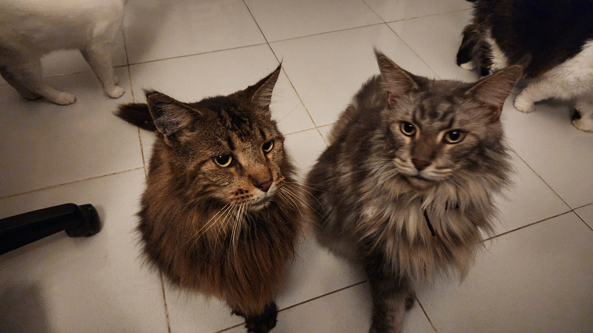
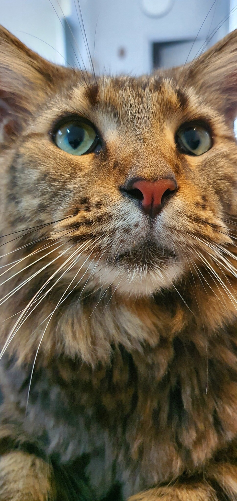
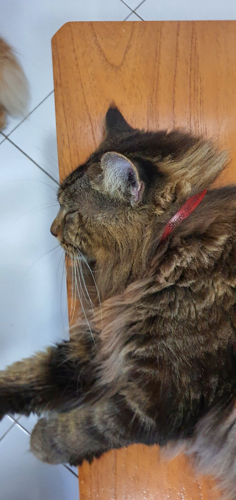
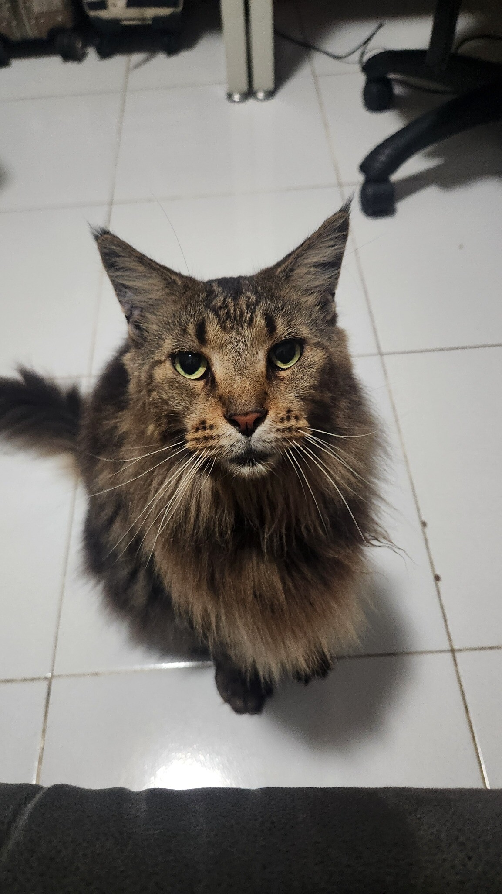
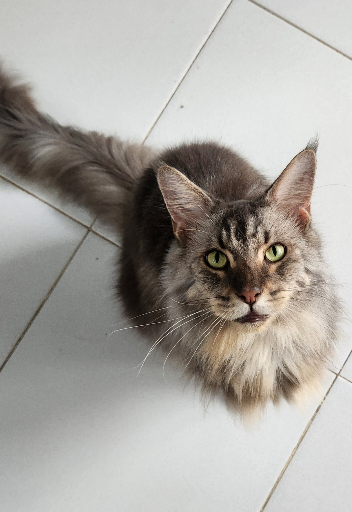
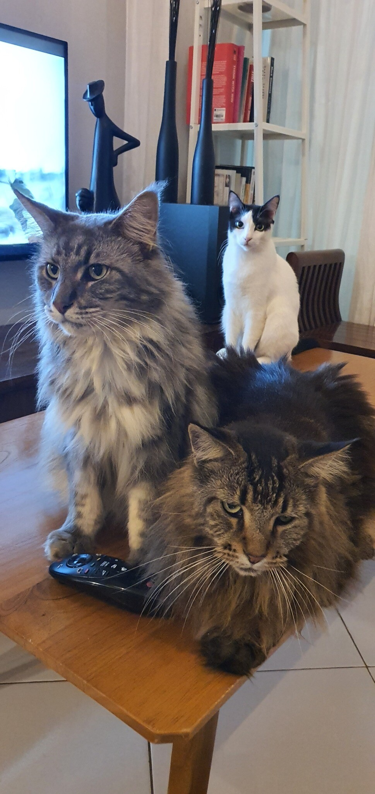

Stories
Storiesof de LunaTatiana Olenka
Kisah anabul
Tatiana Olenka
Sebuah kisah tentang nama, rumah, dan bagaimana kepedulian memberi kesempatan baru untuk pulang.
Ikuti cerita di Instagram ↗Stories of de Luna
Materi dan nuansa halaman ini mengikuti folder Stories of de Luna: hangat, jujur, personal, dan memberi ruang pada perjalanan setiap anabul.
StoriesSebuah kisah tentang nama, rumah, dan bagaimana kepedulian memberi kesempatan baru untuk pulang.
Ikuti cerita di Instagram ↗ Untukmu,
Untukmu,Ada yang hadir sebentar, tetapi cahayanya tinggal lama. Merawat sampai akhir juga merupakan bentuk cinta.
Baca lanjutan ↗ 5 Hal
5 HalCatatan praktis untuk mengenali keadaan darurat dan menentukan kapan perlu mencari bantuan dokter hewan.
Lihat layanan Pet Care →
Sebuah potret sederhana dari ruang perawatan: induk kucing dan anak-anaknya, bersama dalam suasana yang aman dan hangat.
Dukung perawatan mereka →
Padma datang dengan kaki yang terluka dan sedang hamil. Setelah amputasi, ia tetap tegar dan memberi kehidupan kepada anak yang membutuhkan.

Sore itu, Sabtu. Padma datang dengan kaki kiri yang bengkak, luka menganga membesar di satu-dua titik, merona pink dengan guratan-guratan bekas luka yang tak beraturan. Mirip lengkuas — tapi versi yang babak belur.
Ceritanya sebenarnya sudah dimulai lima hari sebelumnya, ketika misi penyelamatan mulai didiskusikan — Padma sudah tidak bisa lagi dipertahankan di salah satu perumahan karena sebagian penghuninya tak suka kehadiran kucing, dan ia harus segera dipindahkan. Kaki lengkuasnya itu hasil pukulan manusia. Untungnya seorang tetangga melihat, merawatnya sebentar, dan menjauhkannya dari tangan yang jahat. Temanku dan tetangga itulah yang menginisiasi penyelamatannya, ikut merawat Padma sebelum akhirnya mengantarnya sendiri, bersama keluarga temanku, ke rumah barunya — Rumah Rembulan, atau Casa de Luna.
Begitu tiba di Casa de Luna, cerita temanku tentang kondisi kucing pincang yang sedang hamil ini semakin jelas terlihat. Kehamilan si pincang — begitu panggilannya ketika datang — membuat pengobatan agresif jadi pilihan yang sulit. Kami hanya bisa memberi antibiotik, berharap luka yang bernanah dan basah itu mengering sedikit demi sedikit, dan ternyata berhasil. Seminggu kemudian, hari Selasa tanggal 18 Agustus, Padma melahirkan — seorang bayi prematur, tanpa bulu, hanya kulit saja, dengan teriakan yang sempat melengking namun sayangnya tak lama bertahan. Sabtu di minggu berikutnya, Ungger menyusul tanpa banyak basa-basi, berselang lebih dari seminggu sejak kepergian kakaknya yang pertama. Perut Padma masih saja bulat, jadi kami menunggu, siapa tahu ada adik lain yang mau datang.
Kami menunggu terus. Tak kunjung datang.
Ungger, bayi Padma yang tak pernah lepas dari susu ibunya, lapar terus — “ungger” rasanya memang nama yang pas untuk bocah kecil yang rakus ini. Beberapa perawatan sempat kami tunda demi Ungger yang masih menyusu. Satu-dua minggu berlalu tanpa tanda-tanda adik lain yang akan menyusul, sementara kaki Padma justru makin membesar dan bernanah. Kekhawatiran terbesar kami saat itu adalah kanker — jika terlambat ditangani, bisa menyebar dan mengancam nyawa sang ibu. Karena tak kunjung ada adik lain yang menampakkan diri, USG pun dilakukan untuk memastikannya. Hasilnya: Ungger memang anak tunggal yang tersisa.
Dengan bayangan kanker yang menghantui, aku sempat bimbang — berusaha menghindari amputasi dan berharap penyembuhan bisa berjalan normal lewat antibiotik dan perawatan luka saja. Tapi di sisi lain, aku juga cemas: kalau ini benar kanker, ia bisa menyebar ke mana-mana. Aku pun mulai mencari beberapa klinik dengan harga yang masuk akal, karena terus terang harga jadi pertimbangan penting, tapi aku tak mau mengorbankan keamanan proses amputasinya nanti. Untungnya, teman baik yang dulu mengantar Padma ke rumah ini bersedia membantu menggalang dana untuk biaya pengobatannya.
Empat hari setelah USG, kami akhirnya melakukan rontgen. Namun dalam seminggu itu, kaki kiri Padma justru makin mengembang dan merekah, berkilat basah karena ia terus-menerus menjilatinya. Setiap malam, kaki yang membengkak dengan luka bernanah itu dibersihkan, diberi salep, dibalut perban, dan diganti agar tetap kering dan tak lagi dijilat. Selama itu, Padma tampak lebih nyaman, muka Ungger pun tidak lagi basah atau bau nanah yang menetes dari kaki kiri ibunya.
Keputusan mengamputasi kaki Padma itu sendiri sudah kuambil tiga hari sebelum operasi dilakukan, terutama setelah hasil rontgen keluar dan menunjukkan adanya massa padat di sekitar kakinya. Balutan perban memang sempat membuat lukanya kering, tapi sekering apa pun, aku sadar lukanya akan terus berulang. Padma tak akan pernah nyaman menyeret-nyeret kaki lengkuasnya yang bengkaknya terus merambat naik.
Minggu, 6 September, di tengah debu vulkanik Krakatau yang masih beterbangan, Padma akhirnya menjalani operasi amputasi. Pilihan yang berat — tapi mempertahankan kaki itu pun tak akan membuat hidupnya lebih sehat, apalagi lebih selamat, ke depannya. Kuantar Padma bersama Ungger di dalam tas ke sebuah klinik.
“Dok, titip Padma, ya,” kataku, sebelum dokter melakukan rontgen dan cek darah pra-operasi. Aku sempat khawatir soal kadar trombositnya — kalau tidak mencukupi, operasi bisa tertunda — tapi alhamdulillah Padma dinyatakan sehat dan aman untuk melanjutkan proses amputasi. Pukul 11.00 kami tiba di klinik, dan pukul 14.30 telepon dari dokter mengabarkan Padma sudah boleh dibawa pulang.
Lega. Satu keping beban akhirnya terangkat. Kini tinggal menemani Padma menyusui dan pulih selama masa transisinya.
Padma kini resmi menyandang gelar kucing berkaki tiga. Padmarena bersalin nama jadi Tria Pingkan Padmarena, gadis dari perumahan yang datang dengan tiga kaki berwarna merah jambu.
Padma sekarang terlihat jauh lebih segar, makannya lahap diberi Mother and Kitten dari Royal Canin. Dan siapa lagi yang paling senang, kalau bukan Ungger?
Cerita Padma tak berhenti setelah amputasi. Suatu sore, seorang perempuan datang membawa dus cokelat kecil berisi seekor kitten yang usianya mungkin baru genap seminggu. “Ada kucing yang sedang menyusui di sini, Bu?” Kitten itu, katanya, ditemukan begitu saja di pinggir jalan — induknya entah ke mana.
“Iya, nggak apa-apa, sini saja,” kataku, buru-buru menutup pagar sebelum Kimi — si bocah rembulan yang selalu tak sabar ingin keluar setiap kali pintu pagar terbuka — keburu kabur.
Aku sendiri tak tahu dari mana tiba-tiba seorang ibu paruh baya, menggendong bayi kucing itu, muncul begitu saja di depan rumah. “Pak satpam bilang saya disuruh ke rumah ini. Katanya di sini Pet Rescue,” katanya.
“Oke, Bu, tinggal saja di sini,” jawabku, berharap percakapan itu segera usai — sejujurnya aku tak paham siapa dan bagaimana ibu ini benar-benar sampai ke sini.
Anak Padma yang pergi lebih dulu, kini seolah kembali dalam wujud lain: Duz Blanko Oberman. Begitulah Ungger Remington mendapat saudara sesusu — hanya dalam sekejap waktu, di satu sore biasa.
Padma yang baik — kakinya memang tak lagi utuh, karena pernah dipukul manusia. Tapi Padma, seorang kucing yang tetap tegar, membuktikan: ia bukan hanya bisa terus hidup, ia bahkan sanggup memberi kehidupan pada seorang anak yang entah di rimba mana induknya berada.
Dipukul tidak membuat Padma jatuh — ia hanya belajar berjalan dengan tiga kaki. Kasih sayang, bagi manusia, sering cuma teori dan hitung-hitungan — apalagi untuk yang lemah. Padma membuktikan sebaliknya: satu pukulan, tiga kaki, satu cinta. Sebuah aksi, bukan teori atau hitungan. Ia tidak patah — ia justru utuh.

Kilas cerita tentang Shiero, kebiasaan berburu malamnya, dan bagaimana kenangan kecil terasa semakin berarti ketika waktu berjalan pelan.




Kilas cerita di satu masa, medio 2018 — salah satu babak dari kumpulan kisah kebadungan Shiero, dengan sedikit kabar terbaru di penghujung cerita.
Untuk kesekian kalinya, malam itu si bontot Shiero nekat manjat tembok belakang rumah. Seperti biasa, tim Casa de Luna dibikin heboh dan akhirnya bahu-membahu menahan si gembul ini supaya nggak keburu meloncat ke rumah tetangga. Kalau sampai kejadian, wah, bisa cilaka tiga belas — bayangin begadang nyariin kucing item di tengah malam gelap gulita. Nyari jarum di tumpukan jerami aja udah pusing, apalagi nyari kucing hitam tanpa lampu jalan.
Shiero memang punya kebiasaan memanjat tembok kalau udah malam. Setelah kami amati beberapa kali, ternyata alasannya sederhana: dia lagi berburu, dengan target utama dua sampai tiga ekor cicak yang berani nongol di dinding. Begitu berdiri di sudut tembok, matanya langsung terkunci ke buruan — excited banget, mulutnya mangap-mangap sambil meong-meong kecil, siap pasang kuda-kuda buat berburu. Radarnya nyala, kuda-kuda siap, dan dalam satu lompatan — hap! — sekali sergap.
Masalahnya, niat besar itu jarang berbanding lurus sama hasil. Si bocah nggak pernah benar-benar berhasil menangkap cicak-cicak itu, karena kami selalu ikut campur mengalihkan perhatiannya — sedikit banyak demi keamanan cicaknya juga, sih. Segala strategi sudah dicoba: dari menyorotkan laser ke dinding biar dia teralihkan dan lari ke arah toren (biar gampang ditarik turun), sampai jurus klasik menyodorkan makanan basah supaya dia sibuk makan sementara kakinya diam-diam ditarik. Butuh sekitar sepuluh menit drama tarik-menarik sebelum si gembul akhirnya berhasil diamankan.
Drama sepuluh menit itu ternyata bukan kejadian sekali dua kali — cukup sering terulang sampai akhirnya kami hafal betul jadwalnya. Dari hasil observasi siang dan malam, pola Shiero ternyata cukup jelas: lompat pagar itu kegiatan khusus malam hari. Siang atau sore, dia lebih memilih nongkrong santai bareng geng Casa de Luna, atau main petak umpet dan lulumpatan (lompat-lompatan) nggak jelas juntrungannya. Tapi begitu matahari terbenam, jam jaga ekstra harus diaktifkan — soalnya ternyata banyak sekali buruan yang keluar di malam hari, dan Shiero nggak pernah mau ketinggalan kesempatan.
Ternyata, bakat berburu malam ini bukan monopoli Shiero seorang. Cerita ini jadi mengingatkanku pada satu lagi anak gadisku, Bonita. Kalau malam tiba, dia juga punya kebiasaan serupa: duduk sendirian di halaman belakang, mengamati cicak-cicak yang lalu-lalang dengan tatapan tajam, diam-diam menilai mana buruan paling yahud buat malam itu — bedanya, Bonita jauh lebih tenang dan strategis, nggak sampai bikin satu rumah begadang.
Tapi dari semua predator amatir di rumah ini, Shiero tetaplah juara tak terbantahkan untuk kategori paling niat sekaligus paling sering ketahuan. Begitulah kisah si bontot Shiero dan obsesi malamnya pada cicak — cerita kecil yang selalu berhasil bikin satu rumah heboh. Kadang ngeselin, kadang bikin geleng-geleng kepala sambil ketawa sendiri, tapi selalu jadi bukti betapa hidupnya rumah rembulan ini karena tingkah kebadungannya. Hampir sembilan tahun sudah berlalu sejak malam itu, tapi setiap kali cerita ini dibuka lagi, rasanya seperti baru kemarin — Shiero kecil yang gesit, penuh energi, dan nggak pernah kehabisan alasan buat bikin geger satu rumah.
Shiero yang seperti itu yang paling aku kangenin — sosok paling niat berburu, paling sering bikin geger satu rumah gara-gara ambisinya sendiri. Sekarang, dia lebih banyak menghabiskan waktu duduk tenang di pojokan favoritnya, memilih mengamati dari jarak dekat ketimbang memanjat tembok atau berburu cicak. Bukan lagi predator paling gesit di rumah — tapi tetap Shiero yang sama, dengan cara barunya sendiri menikmati hari.
Gagal ginjal dan sisa-sisa pertarungannya melawan virus memang membatasi banyak hal yang dulu biasa dia lakukan. Tapi itu bukan alasan buat berhenti berharap — justru jadi alasan untuk lebih menghargai setiap momen kecil yang masih ada. Aku masih setia menunggu saat dia mau naik lagi ke kotak favoritnya sekadar melihat dunia dari atas, atau menoleh sedikit lebih lama saat namanya dipanggil. Selama itu masih ada, itu sudah cukup jadi alasan untuk terus semangat dan gigih memberi yang terbaik buatnya, hari demi hari. Masih banyak tahun dan cerita lain yang ingin kami tulis bersama — untuk si badung yang penuh sayang ini.
Catatan: diambil dari blog pribadi, sebuah cerita dari tahun 2018, dengan tambahan cerita hari ini.

Empat perubahan kecil pada perilaku Dunan menjadi bahasa paling jujur bahwa ada sesuatu yang tidak beres.

Franklin Dunan sudah hampir sepuluh tahun jadi bagian dari rumah ini — gondrong, kalem, dan seharusnya jadi kucing paling gampang ditebak isi hatinya. Makanya sore itu terasa aneh sejak detik pertama.
Biasanya, begitu namanya dipanggil, Dunan akan datang mendekat, kadang dengan miaw khasnya yang cuma dia yang punya. Tapi sore itu, panggilan demi panggilan berakhir sia-sia. Dia memilih pojok ruang tamu, memunggungi segala usaha untuk menariknya kembali. Tatapannya lemah, jauh dari ekspresi menggemaskan yang biasa bikin orang lupa dia sudah kucing paruh baya.
Menjelang magrib, saat geng bulu lain sudah berbaris rapi menunggu makan malam, formasi itu kehilangan satu nama. Snack dan wet food — dua senjata pamungkas yang biasanya tak pernah gagal — kali ini cuma dilirik, lalu diabaikan.
Dunan menyendiri di kolong tempat tidur, melingkarkan badan seolah dunia luar sedang tidak dia butuhkan. Ajakan main dari Shiero dan Othena pun ditolak mentah-mentah — sesuatu yang nyaris tidak pernah terjadi.
Sebagai orang yang sudah nyaris satu dekade mengurus anak-anak gembul di rumah ini, aku tahu diam bukan berarti tenang. Empat sinyal yang datang bersamaan malam itu — buang muka, menolak makan, mengasingkan diri, menolak ajakan main — adalah bahasa yang Dunan gunakan untuk bilang ada yang salah, jauh sebelum dia bisa menunjukkannya dengan cara lain.
Saat aku coba mengusap dagu dan dahinya, dia membuka mulut sedikit — dan dari situ tercium bau yang tidak biasa. Bukan bau mulut kucing pada umumnya. Ini yang membuatku memutuskan untuk mengamatinya semalaman, mencatat setiap detail sebelum memutuskan langkah berikutnya.
Paginya, tidak ada perubahan. Tim Casa de Luna membuka mulut Dunan lebih lebar untuk memastikan kecurigaanku. Gusinya bengkak.
Tidak ada lagi ruang untuk menunggu. Kami menyiapkan mobil, membawa Dunan ke klinik dengan catatan pengamatan semalam sebagai bekal.
Di ruang tunggu, waktu terasa berjalan lebih lambat dari biasanya. Semua pertanyaan ringan di kepala menghilang, digantikan satu yang terus berputar: seberapa serius ini, dan apa yang akan terjadi selanjutnya. Yang bisa kulakukan hanya menunggu, sambil diam-diam berharap gusi bengkak itu bukan awal dari sesuatu yang lebih rumit.
Di Casa de Luna, momen seperti ini bukan hal asing. Setiap hari kami menemani kucing-kucing yang menua atau sedang tidak baik-baik saja, dan setiap kali itu pula kami diingatkan bahwa merawat bukan cuma soal memberi makan dan tempat tidur yang hangat — tapi soal belajar mendengar bahasa yang tidak terucap.
Diam yang tiba-tiba, nafsu makan yang hilang, keinginan untuk sendirian, dan penolakan untuk bermain — empat hal kecil yang malam itu, kalau digabungkan, ternyata jadi peringatan paling jujur yang bisa Dunan berikan. Bukan checklist dari internet, tapi bahasa yang kami pelajari di Casa de Luna selama lebih dari sepuluh tahun saling mengerti.
Kalau kamu juga menemani kucing yang menua atau sedang tidak baik-baik saja, mungkin caranya bukan menunggu dia bicara — tapi belajar menerjemahkan diamnya.
Ikuti terus cerita Dunan dan teman-teman di Casa de Luna ya — karena kisah ini hanya satu, dari sekian.
Foto dari folder Photos Anabul—momen sederhana yang membuat shelter terasa seperti rumah.


“Yang patah tidak selalu perlu diperbaiki agar layak dicintai.”
— Dari rumah kecil kami